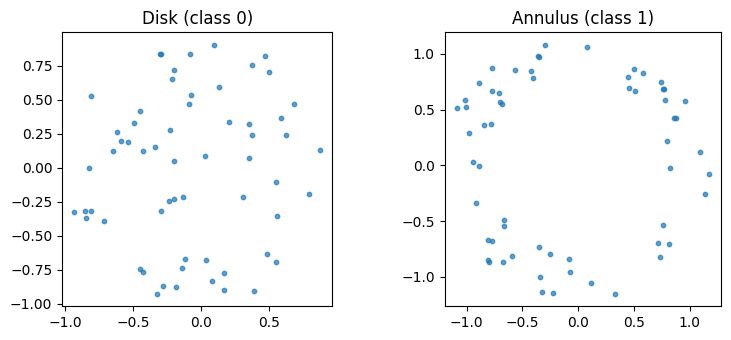
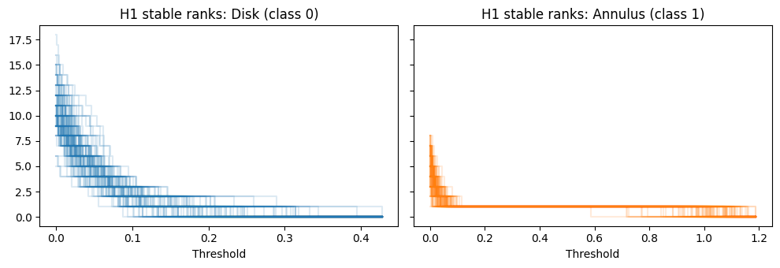

Topological features for PyTorch classifiers#
This tutorial shows how to turn point cloud data into fixed-size topological feature vectors using stablebear, and feed them into a PyTorch neural network for classification.
The pipeline looks like this:
Point clouds --> Persistent homology --> Functional summaries (PCFs)
|
Evaluate on grid
|
NumPy feature vectors
|
torch.from_numpy()
|
PyTorch model
The key insight is that functional summaries (stable ranks, Betti curves, APFs) are piecewise constant functions, and evaluating them on a fixed grid of time points produces ordinary numeric vectors that any neural network can consume.
Step 1: Generate data#
We create two classes of point clouds with different topological structure:
Class 0: points sampled uniformly from a filled disk (no persistent loop)
Class 1: points sampled from an annulus (one persistent H1 loop)
[1]:
import numpy as np
import stablebear as sb
from stablebear import persistence
rng = np.random.default_rng(42)
n_samples = 200
n_points = 60
def sample_disk(n, rng):
"""Uniform samples from a filled unit disk."""
r = np.sqrt(rng.uniform(0, 1, n))
theta = rng.uniform(0, 2 * np.pi, n)
return np.column_stack([r * np.cos(theta), r * np.sin(theta)]).astype(np.float32)
def sample_annulus(n, rng):
"""Uniform samples from an annulus (r in [0.8, 1.2])."""
r = np.sqrt(rng.uniform(0.8**2, 1.2**2, n))
theta = rng.uniform(0, 2 * np.pi, n)
return np.column_stack([r * np.cos(theta), r * np.sin(theta)]).astype(np.float32)
pclouds = sb.zeros((n_samples,), dtype=sb.pcloud32)
labels = np.zeros(n_samples, dtype=np.int64)
for i in range(n_samples):
if i < n_samples // 2:
pclouds[i] = sample_disk(n_points, rng)
labels[i] = 0
else:
pclouds[i] = sample_annulus(n_points, rng)
labels[i] = 1
print(f"Point clouds: {pclouds.shape}, Labels: {labels.shape}")
Point clouds: Shape(200), Labels: (200,)
Let’s visualize one example from each class:
[2]:
import matplotlib.pyplot as plt
fig, axes = plt.subplots(1, 2, figsize=(8, 3.5))
for ax, idx, title in zip(axes, [0, n_samples // 2], ["Disk (class 0)", "Annulus (class 1)"]):
pts = pclouds[idx].to_numpy() if hasattr(pclouds[idx], 'to_numpy') else np.array(pclouds[idx])
ax.scatter(pts[:, 0], pts[:, 1], s=10, alpha=0.7)
ax.set_aspect("equal")
ax.set_title(title)
plt.tight_layout()
plt.show()

Step 2: Compute topological features#
We compute persistent homology up to dimension 1, convert the barcodes to stable rank PCFs, and then evaluate them on a fixed grid to get feature vectors.
[3]:
# Persistent homology (H0 and H1)
barcodes = persistence.compute_persistent_homology(pclouds, max_dim=1)
print(f"Barcodes shape: {barcodes.shape}") # (200, 2)
# Convert to stable rank PCFs
sranks = persistence.barcode_to_stable_rank(barcodes)
print(f"Stable ranks shape: {sranks.shape}") # (200, 2)
Barcodes shape: Shape(200, 2)
Stable ranks shape: Shape(200, 2)
[4]:
# Evaluate H1 stable ranks on a grid to get fixed-size feature vectors
grid = np.linspace(0, 2.0, 50, dtype=np.float32)
features = sranks[:, 1](grid) # shape (200, 50)
print(f"Feature matrix shape: {features.shape}")
Feature matrix shape: (200, 50)
Let’s visualize the H1 stable ranks for each class. The annulus class should show more persistent H1 features (loops).
[5]:
from stablebear.plotting import plot as plotpcf
fig, axes = plt.subplots(1, 2, figsize=(10, 3.5), sharey=True)
half = n_samples // 2
plotpcf(sranks[:half, 1], ax=axes[0], alpha=0.15, color="C0")
axes[0].set_title("H1 stable ranks: Disk (class 0)")
axes[0].set_xlabel("Threshold")
plotpcf(sranks[half:, 1], ax=axes[1], alpha=0.15, color="C1")
axes[1].set_title("H1 stable ranks: Annulus (class 1)")
axes[1].set_xlabel("Threshold")
plt.tight_layout()
plt.show()

Step 3: Train a PyTorch classifier#
Now we convert the features to PyTorch tensors and train a simple feedforward network.
[6]:
import torch
import torch.nn as nn
from torch.utils.data import DataLoader, TensorDataset
# Convert to PyTorch tensors
X = torch.from_numpy(features)
y = torch.from_numpy(labels)
# Train/test split
n_train = 160
X_train, X_test = X[:n_train], X[n_train:]
y_train, y_test = y[:n_train], y[n_train:]
train_loader = DataLoader(
TensorDataset(X_train, y_train),
batch_size=32, shuffle=True
)
[7]:
# A small feedforward network
model = nn.Sequential(
nn.Linear(50, 32),
nn.ReLU(),
nn.Linear(32, 2),
)
optimizer = torch.optim.Adam(model.parameters(), lr=1e-3)
loss_fn = nn.CrossEntropyLoss()
# Training loop
for epoch in range(50):
for X_batch, y_batch in train_loader:
loss = loss_fn(model(X_batch), y_batch)
optimizer.zero_grad()
loss.backward()
optimizer.step()
if (epoch + 1) % 10 == 0:
with torch.no_grad():
train_acc = (model(X_train).argmax(1) == y_train).float().mean()
print(f"Epoch {epoch+1:3d} loss={loss.item():.4f} train_acc={train_acc:.0%}")
Epoch 10 loss=0.1324 train_acc=100%
Epoch 20 loss=0.0457 train_acc=100%
Epoch 30 loss=0.0155 train_acc=100%
Epoch 40 loss=0.0119 train_acc=100%
Epoch 50 loss=0.0102 train_acc=100%
[8]:
# Evaluate on test set
with torch.no_grad():
preds = model(X_test).argmax(dim=1)
acc = (preds == y_test).float().mean().item()
print(f"Test accuracy: {acc:.0%}")
Test accuracy: 100%
Because the annulus has a prominent H1 feature (a persistent loop) that the filled disk lacks, the stable rank vectors for the two classes are quite distinct, and even a small network can learn to separate them.
Variations#
Different summaries#
Replace barcode_to_stable_rank with barcode_to_betti_curve or barcode_to_accumulated_persistence for alternative representations. You can also concatenate features from multiple summaries or homology dimensions.
Kernel methods#
Instead of vectorizing, use sb.l2_kernel to compute a kernel matrix directly from the PCFs, then convert to PyTorch. This is useful with kernel-based models or as a precomputed similarity matrix for contrastive learning.
[9]:
K = sb.l2_kernel(sranks[:, 1]).to_dense()
K_torch = torch.from_numpy(K)
print(f"Kernel matrix shape: {K_torch.shape}")
Kernel matrix shape: torch.Size([200, 200])
Distance matrices#
Similarly, sb.pdist gives pairwise distances that can be used for metric learning or as input to distance-based classifiers.
[10]:
D = sb.pdist(sranks[:, 1]).to_dense()
D_torch = torch.from_numpy(D)
print(f"Distance matrix shape: {D_torch.shape}")
Distance matrix shape: torch.Size([200, 200])